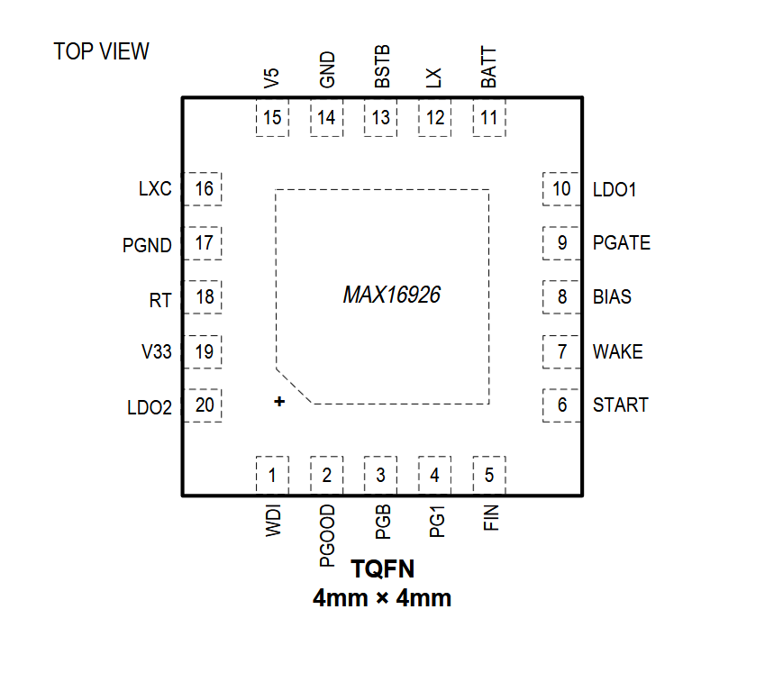

MAX16926

Pin Description
| PIN | NAME | FUNCTION |
|---|---|---|
| 1 | WDI | Watchdog Input. WDI is the reset input for the watchdog counter, which is cleared whenever there is a positive-going transition on WDI. The watchdog timer is active when one or both of the WAKE and START inputs is high. When the watchdog times out, PG1 asserts low. The watchdog can be disabled using appropriate resistor values on the RT pin |
| 2 | PGOOD | Sequence Error Output (Open-Drain). When low, this pin indicates that the power-on sequence was not completed successfully or that one of the regulators (V5, V33, or LDO2) is out of regulation. |
| 3 | PGB | Open-Drain Power-Good Output for High-Voltage Buck Converter. |
| 4 | PG1 | Open-Drain Power-Good Output for High-Voltage Linear Regulator. |
| 5 | FIN | Active-Low Fault-In Input. When FIN goes low, the PGATE output is disabled. If unused, connect FIN to GND. |
| 6 | START | Active-High Sequence Start Pin. When START is taken high, the power-on sequence is initiated. When START goes low, the power-off sequence is executed. |
| 7 | WAKE | Wake Input. When WAKE is high, the watchdog timer is enabled. When WAKE is low, the watchdog timer is off. When both WAKE and START are low, the IC is in low-quiescent-current mode. |
| 8 | BIAS | Output of Internal Bias Regulator for the High-Voltage Buck. Connect a ceramic capacitor of value 1μF between BIAS and GND. |
| 9 | PGATE | Current-sink drive output for external PMOS switch that supplies power to the display backlight section or to other battery-connected loads. |
| 10 | LDO1 | Output of High-Voltage 3.3V Regulator. LDO1 is always active when the BATT voltage is above the undervoltage lockout level. The input to this regulator is BATT. Connect a bypass capacitor of at least 44μF from LDO1 to GND. |
| 11 | BATT | Battery Supply Input. Bypass BATT to GND with a ceramic capacitor of value 10μF. |
| 12 | LX | Switching Node of High-Voltage Buck Converter. Connect the buck inductor and rectifying diode to this pin, placing them as close as possible to the IC |
| 13 | BSTB | Boost Capacitor Connection for High-Voltage Buck. Connect a 0.1μF capacitor from BSTB to LX. |
| 14 | GND | Ground Connection. |
| 15 | V5 | 3.3V Output of High-Voltage Buck Converter. Place the output filter capacitors at this pin. V5 is also the feedback point for the converter. |
| 16 | LXC | Switching node of low-voltage buck converter. Connect the buck inductor to this pin, placing it as close as possible to the IC. |
| 17 | PGND | Power Ground Connection. |
| 18 | RT | Frequency-Set Pin. Connect a resistor from RT to GND to set the switching frequency of the converters. |
| 19 | V33 | 1.8V Output of Low-Voltage Buck Converter. Place the output filter capacitors at this pin. V33 is also the feedback point for the converter. To use the low-voltage converter as a switch, connect V33 to GND. |
| 20 | LDO2 | Output of Low-Voltage Linear Regulator. The input to this regulator is V5. Connect a bypass capacitor of at least 22μF from LDO2 to GND. |